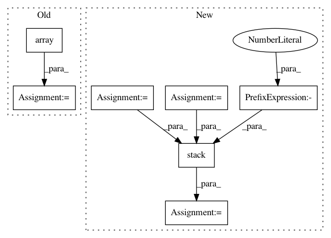

6f52d73623e0f7480061756fbe6e784c4b9854e6,geomstats/geometry/beta_distributions.py,BetaMetric,inner_product_matrix,#BetaMetric#Any#,151
Before Change
g0 = gs.array(
[polygamma(1, param_a) - polygamma(1, param_a + param_b),
- polygamma(1, param_a + param_b)])
g1 = gs.array(
[- polygamma(1, param_a + param_b), polygamma(1, param_b)
- polygamma(1, param_a + param_b)])
matrices.append(gs.stack([g0, g1]))
return gs.stack(matrices)
def christoffels(self, base_point):
After Change
raise ValueError("The metric depends on the base point.")
param_a = base_point[..., 0]
param_b = base_point[..., 1]
polygamma_ab = polygamma(1, param_a + param_b)
polygamma_a = polygamma(1, param_a)
polygamma_b = polygamma(1, param_b)
vector = gs.stack(
[polygamma_a - polygamma_ab,
- polygamma_ab,
polygamma_b - polygamma_ab], axis=-1)
return SymmetricMatrices.symmetric_matrix_from_vector(vector)
def christoffels(self, base_point):
Compute the Christoffel symbols.
In pattern: SUPERPATTERN
Frequency: 3
Non-data size: 7
Instances
Project Name: geomstats/geomstats
Commit Name: 6f52d73623e0f7480061756fbe6e784c4b9854e6
Time: 2020-04-25
Author: nicolas.guigui@inria.fr
File Name: geomstats/geometry/beta_distributions.py
Class Name: BetaMetric
Method Name: inner_product_matrix
Project Name: interactiveaudiolab/nussl
Commit Name: b82419f321b3b52841065e00d1f50945d7e8a2ee
Time: 2020-03-16
Author: prem@u.northwestern.edu
File Name: nussl/separation/primitive/hpss.py
Class Name: HPSS
Method Name: run
Project Name: geomstats/geomstats
Commit Name: 109f18b6bce4b72299f6b9aa4cc94bab2d283190
Time: 2020-04-25
Author: nicolas.guigui@inria.fr
File Name: geomstats/geometry/beta_distributions.py
Class Name: BetaMetric
Method Name: christoffels